무선설비기사 (2010-03-14 기출문제)
1과목: 디지털 전자회로
1. 다음 정류회로에 대한 직류출력전력에 대해 올바른 것은? (단, Rf는 다이오드의 순방향 저항이다.)
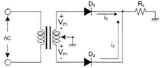
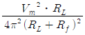
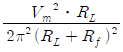
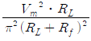
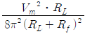
(정답률: 47%)

2. 다음 평활회로에서 직류출력전압은 약 얼마인가?
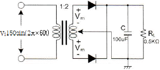
- 48[V]
- 72[V]
- 138[V]
- 192[V]
(정답률: 50%)
3. 정전압 회로의 안정도 파라미터에 해당되지 않는 것은?
- 전압안정계수
- 온도안정계수
- 출력저항
- 출력직류전압
(정답률: 40%)
4. 다음 회로에 대한 설명으로 틀린 것은?
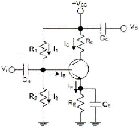
- 자기 바이어스 회로이다.
- 고정된 동작점(Q)를 가진다.
- CE를 통하여 교류신호 부궤환을 막아준다.
- 입력전압을 R1, R2로 분배시켜 준다.
(정답률: 34%)
5. 다음 회로에서 RB값은 약 얼마인가? (단, VCC = 20[V], RC = 10[KΩ], RE = 0.47[KΩ], VCE = 5[V], β = 50, VBE = 0.7[V])
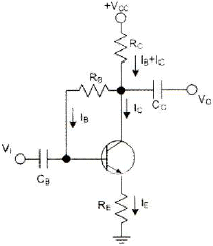
- 123[KΩ]
- 133[KΩ]
- 153[KΩ]
- 163[KΩ]
(정답률: 19%)
6. 부궤환 증폭회로의 특징으로 틀린 것은?
- 비직선 일그러짐 감소
- 잡음 감소
- 이득 증가
- 대역폭 증대
(정답률: 58%)
7. 전력증폭기에 대한 설명으로 틀린 것은?
- 대신호 동작용으로 사용된다.
- 증폭기의 선형동작에 의해 고조파 왜곡이 생긴다.
- 고출력 증폭을 위해 사용된다.
- 부궤환 회로를 적용하면, 저왜곡 고출력이 가능하다.
(정답률: 75%)
8. 발진조건에 대한 설명 중 틀린 것은?
- 궤환증폭기의 이득(A)과 궤환율(β)의 곱이 1보다 작으면 발진 진폭이 감소한다.
- 궤환증폭시 입력신호와 궤환신호의 위상이 180° 차이가 난다.
- 증폭된 출력의 일부를 입력쪽으로 정궤환시켜야 한다.
- 발진이 지속될 수 있는 상태를 유지하기 위해서는 βA=1 조건을 만족해야 한다.
(정답률: 73%)
9. 그림과 같은 발진회로의 발진주파수는 약 얼마인가? (단, R1=R2=R3=R4=16[KΩ], C1=C2=0.02[μF])
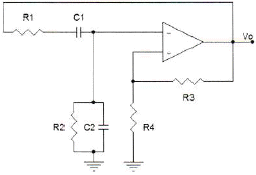
- 483[Hz]
- 490[Hz]
- 497[Hz]
- 584[Hz]
(정답률: 55%)
10. 주파수 변조에서 최대 주파수 편이가 10[kHz], 신호 주파수가 2.5[kHz]일 때, FM 피변조파의 대역폭은?
- 4[kHz]
- 10[kHz]
- 25[kHz]
- 50[kHz]
(정답률: 63%)
11. 디지털 변조방식에 대한 설명 중 틀린 것은?
- 진폭편이 변조방식은 반송파의 진폭을 변화시키는 방식으로 on-off keying이라고도 부른다.
- 주파수 편이변조방식은 반송파의 주파수를 변화시키는 방식으로 모뎀을 통한 데이터 전송방식에 이용된다.
- 위상편이 변조방식은 반송파의 위상을 변화시키는 방식으로 회로는 비교적 간단하나 심볼 에러발생 확률이 높다.
- 직교진폭 변조방식은 진폭과 위상에 정보를 싣는 방식으로 중속도 변조방식에 이용된다.
(정답률: 41%)
12. 펄스파에서 낮은 주파수 성분이나 직류분이 잘 통하지 않기 때문에 생기는 것으로 펄스 하강 부분이 낮아진 크기를 무엇이라 하는가?
- 새그(sag)
- 링깅(ringing)
- 언더슈트(undershoot)
- 오버슈트(overshoot)
(정답률: 48%)
13. 쌍안정 멀티바이브레이터 회로의 응용 분야는?
- 분주기
- 전압분배기
- AD 변환기
- 전압비교기
(정답률: 34%)
14. 그림과 같은 논리 회로 출력의 값과 기능은?
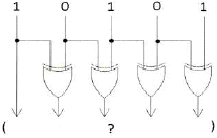
- 11011, 패리티 점검
- 11000, 양수, 음수 점검
- 11111, 코드 변환
- 10000, 패리티 변환
(정답률: 77%)
15. 다음 논리 함수
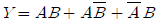
를 간소화하면 옳은 것은?- A+B
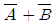
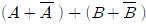
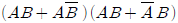
(정답률: 77%)
16. 마스터 슬레이브 JK-FF에서 클록펄스가 들어올 때마다 출력 상태가 반전되는 것은?
- J=0, K=0
- J=1, K=0
- J=0, K=1
- J=1, K=1
(정답률: 75%)
17. 다음 그림과 같은 JK-FF 회로에서 클럭펄스가 몇 개 입력될 때 Q1=Q2=0이 출력되는가?
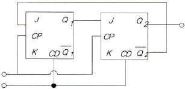
- 3개
- 4개
- 5개
- 6개
(정답률: 47%)
18. 다음은 어떤 논리 회로인가?
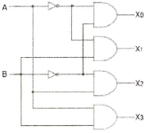
- 인코더
- 디코더
- RS 플립플롭
- JK 플립플롭
(정답률: 82%)
19. A, B를 입력으로 하는 반가산기에서 자리올림 신호 C의 논리식은?
- A-B
- A+B
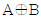
- AㆍB
(정답률: 38%)
20. 다음 중 보수 발생기가 필요한 회로는?
- 일치 회로
- 가산 회로
- 나눗셈 회로
- 곱셈 회로
(정답률: 70%)
2과목: 무선통신 기기
21. 반송파를 정현파 신호에 의해서 60[%] 진폭변조 하였을 때, 피변조파 전력은? (단, 반송파 전력이 600[W]이다.)
- 908[W]
- 808[W]
- 708[W]
- 608[W]
(정답률: 83%)
22. 다음 그림은 입력신호에서 주파수와 위상을 추출하는 위상동기루프(PLL)을 나타낸 것이다. (가), (나)에 들어갈 내용의 조합으로 적절한 것은?
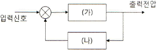
- (가) 위상검출기 (나)저역통과필터
- (가) 위상검출기 (나) 전압제어발진기
- (가) 전압제어발진기 (나) 저역통과필터
- (가) 저역통과필터 (나) 전압제어발진기
(정답률: 35%)
23. ASK 변조방식의 성능에 관한 설명으로 가장 잘못된 것은?
- 동기식과 비동기식의 성능차이는 1[dB] 이하이다.
- Eb/No가 클수록 동기식과 비동기식의 성능 차이는 줄어든다.
- FSK와 비교하여 동기식의 경우 성능이 떨어진다.
- 비동기식의 구현이 간단하지만, 동기식 정합필터에 비해 성능이 떨어진다.
(정답률: 31%)
24. OFDM은 어느 변조방식의 일종이라고 볼 수 있는가?
- M-ary ASK (MASK)
- M-ary FSK (MFSK)
- M-ary PSK (MPSK)
- M-ary QAM (MQAM)
(정답률: 62%)
25. 디지털 변조에서 반송파의 형태는 A(T) cos(2πft +p(t))와 같다. 여기서 A는 진폭, f는 주파수, p는 위상을 의미한다. 변조시 크기와 위상 정보를 동시에 이용하는 변조방식은?
- ASK
- QPSK
- QAM
- OQPSK
(정답률: 73%)
26. 다음은 GPS를 설명한 것이다. 잘못된 것은?
- 여러 개의 위성으로부터 시간 정보를 받는다.
- GPS 수신기는 위성의 위치에 대한 데이터를 받는다.
- 삼각 측량법에 의해 자신의 위치를 계산하는 원리이다.
- GPS 서비스는 다수의 위성 중 4개 이상의 위성으로부터 정보를 받는다.
(정답률: 70%)
27. 다음 항법 장치 중 무선 항법 장치가 아닌 것은?
- SSR
- DME
- VOR
- TACAN
(정답률: 47%)
28. 다음 중 ILS의 구성요소가 아닌 것은?
- Localizer(방위각 제공 시설)
- Glide Path(활공각 제공 시설)
- MLS(초고주파 착륙 시설)
- Marker Beacon(마커 비콘)
(정답률: 70%)
29. 축전지의 충전 종료시 상태 중 잘못된 것은?
- 전해액의 온도가 높아진다.
- 극판의 색이 변한다.
- 전해액의 비중이 높아진다.
- 단자 전압이 매 전지당 1.5~2.0[V]까지 상승한다.
(정답률: 57%)
30. 정류회로에서 초크 코일 입력형의 설명으로 적합하지 않은 것은?
- 소전력 수신기에 적합하다.
- 역전압이 낮다.
- 전압 변동율이 작다.
- 주로 고전류, 저전압에 이용한다.
(정답률: 30%)
31. 정전압회로의 종류가 아닌 것은?
- IC형
- SCR형
- LED형
- 제너 다이오드형
(정답률: 65%)
32. 콘덴서를 이용한 단상 반파 정류회로에 대한 설명이다. 잘못된 것은?
- 출력전압의 맥동율은 콘덴서 C가 클수록 감소한다.
- 출력전압의 맥동율은 부하저항과 무관하다.
- 다이오드를 흐르는 전류는 펄스 전류이다.
- 콘덴서 C는 다이오드가 도통일 때 충전되고, 차단 상태일 때 부하로 방전된다.
(정답률: 52%)
33. AM 송신기의 신호대 잡음비 측정에 필요하지 않은 것은?
- 저주파 발진기
- 감쇠기
- 전력계
- 직선 검파기
(정답률: 67%)
34. 전계강도 측정에 있어서 다음 설명 중 옳지 않은 것은?
- 수신전압과 안테나의 실효고를 알면 계산에 의해서도 구할 수 있다.
- 전계강도 측정기는 내부 잡음에 의해 오차가 발생할 수 있다.
- 복사 전계강도는 송신기 출력의 평방근에 비례한다.
- 주위의 고압 송전선은 전계강도 측정에 영향을 미치지 않는다.
(정답률: 72%)
35. 공중선의 실효저항 측정방법에 해당되지 않는 것은?
- 저항 삽입법
- 표준 인덕턴스를 사용하는 방법
- 작도법
- 치환법(의사 공중선법)
(정답률: 29%)
36. 안테나 실효고 측정방법 중의 하나인 표준 안테나에 의한 방법에서 표준 안테나로 주로 사용되는 안테나는?
- 롬빅 안테나
- 야기 안테나
- 루프 안테나
- 브라운 안테나
(정답률: 73%)
37. 이동통신 단말기의 수신전력이 0.004[μW]일 때 이를 dBm으로 나타내면 몇 [dBm]이 되는가? (단, 1[mW]를 0[dBm]으로 한다.)
- -44[dBm]
- -54[dBm]
- -64[dBm]
- -74[dBm]
(정답률: 63%)
38. 무부하시의 직류 출력전압을 220[V], 부하시의 직류 출력전압을 200[V]라 할 때, 전압 변동률은 몇 [%] 인가?
- 5[%]
- 10[%]
- 20[%]
- 40[%]
(정답률: 80%)
39. 단상 전파 정류회로의 직류 출력전압과 직류 출력전력은 단상 반파 정류회로의 직류 출력전압과 직류 출력전력의 각각 몇 배인가?
- 1배, 2배
- 1배, 4배
- 2배, 2배
- 2배, 4배
(정답률: 79%)
40. 다음 중 축전지 극판에 백색 황산연이 생겼을 때, 실시하는 충전은?
- 초충전
- 속충전
- 부동충전
- 과충전
(정답률: 61%)
3과목: 안테나 공학
41. 전파의 속도는 매질의 어떤 양에 따라 변화하는가?
- 점도와 밀도
- 밀도와 도전율
- 도전율과 유전율
- 유전율과 투자율
(정답률: 78%)
42. 다음 중 포인팅 벡터의 크기를 나타내는 것은? (단, E : 전계의 세기, H : 자계의 세기, μ : 투자율, ε : 유전율)
- EH
- μs
- H/E
- √μ/s
(정답률: 85%)
43. 무손실 급전선로 상에서 입사파 전압의 실효치가 150[V]이고, 전압정재파비가 2일 때, 반사파 전압의 실효치는 얼마인가?
- 50[V]
- 60[V]
- 70[V]
- 80[V]
(정답률: 37%)
44. 그림과 같은 임피던스 정합회로는 어떤 경우에 사용하는가?
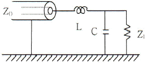
- 평형형 급전선, Z0>ZL
- 평형형 급전선, Z0
- 불평형형 급전선, Z0>ZL
- 불평형형 급전선, Z0
(정답률: 15%)
45. 비동조 급전선의 급전점에 정합회로를 설정하는 이유는?
- 급전선의 파동임피던스를 감소시키기 위하여
- 급전선의 파동임피던스를 일정하게 하기 위하여
- 급전선의 정재파를 실리지 않게 하기 위하여
- 안테나의 고유파장을 조절하기 위하여
(정답률: 67%)
46. 급전선의 필요조건이 아닌 것은?
- 송신용일 때는 절연내력이 클 것
- 급전선의 파동 임피던스가 낮을 것
- 전송효율이 좋을 것
- 유도방해를 주거나 받지 않을 것
(정답률: 58%)
47. 도파관의 임피던스 정합 방법으로 적합하지 않은 것은?
- Stub에 의한 정합
- 도파관 창에 의한 정합
- 커플러에 의한 정합
- Q 변성기에 의한 정합
(정답률: 62%)
48. 반치각이란 주엽의 최대 복사 강도(방향)에 대해 몇 [dB]가 되는 두 방향 사이의 각을 말한다.
- 0[dB]
- -3[dB]
- -6[dB]
- -12[dB]
(정답률: 75%)
49. 접지저항 10[Ω]인 λ/4 수직접지 안테나의 복사 능률은 약 얼마인가?
- 78[%]
- 94[%]
- 80[%]
- 75[%]
(정답률: 28%)
50. 다음 중 안테나의 Q를 나타내는 식으로 적합하지 않은 것은? (단, Le는 안테나의 실효인덕턴스, Ce는 실효정전용량, Re는 실효저항임)
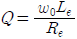
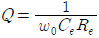
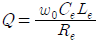
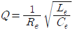
(정답률: 31%)
51. 주파수 특성에 의한 분류에서 광대역 안테나 종류로 옳은 것은?
- 모노폴 안테나
- 헤리컬 안테나
- 마이크로스트립 안테나
- 다이폴 안테나
(정답률: 52%)
52. 단파 안테나의 일반적인 특징에 대한 설명으로 틀린 것은?
- 광대역성의 예민한 지향특성을 갖는다.
- 파장이 짧으므로 고유파장의 안테나를 얻기 쉽다.
- 주로 수직편파를 이용하므로 접지가 불필요하다.
- 복사 효율이 좋고, 반사기 등을 사용할 수 있다.
(정답률: 59%)
53. Corner reflector 안테나에 대한 설명으로 가장 적합하지 않은 것은?
- 지향성은 반사기 면적, 다이폴의 위치에 따라 다르다.
- 각도 θ와 영상수 N의 과계는
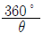
가 되고, 반치각은 약 60°이다. - 구조가 간단하고 이득이 높아 전후방비가 좋으며, 병렬접속이 용이하다.
- 100[MHz]~1000[MHz]대의 고정통신용으로 주로 사용된다.
(정답률: 84%)
54. 송신 안테나 높이가 4[m], 수신 안테나 높이가 1[m]인 경우 직접파 통신이 가능한 전파가시거리는?
- 약 8[km]
- 약 12[km]
- 약 16[km]
- 약 21[km]
(정답률: 48%)
55. 다음 대류권 전파에서 라디오덕트가 생성되는 조건은 어느 것인가? (단, M : 수정굴절율, h : 송신안테나 높이)
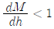
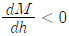
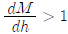
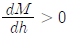
(정답률: 58%)
56. 전리층에 관한 설명 중 틀린 것은?
- 전리 작용은 대기 밀도가 클수록 심하게 일어난다.
- 전리층의 전자밀도는 시간에 따라 일정치 않다.
- 주간에 비해 야간에 전리작용이 커진다.
- 전자파의 감쇠, 굴절, 산란, 반사 현상이 일어난다.
(정답률: 66%)
57. 다음 중 MUF(최고사용주파수)를 결정하는 요소에 해당하지 않는 것은?
- 입사각
- 송신전력
- 전리층의 높이
- 송ㆍ수신점간의 거리
(정답률: 42%)
58. 지표면에서 전리층을 향해 수직으로 펄스파를 발사한 후 2[ms] 후에 생기는 반사파는 어느 전리층에서 반사한 것인가?
- D층
- E층
- Es층
- F층
(정답률: 59%)
59. 도약거리(Skip Distance)에 대한 설명 중 틀린 것은?
- 전리층의 겉보기 높이에 비례한다.
- 사용주파수가 임계주파수보다 낮을수록 크게 된다.
- 전리층에 의한 1회 반사파 도달거리를 말한다.
- 도약거리 이내에 신호가 수신되지 않는 불감지대가 존재한다.
(정답률: 53%)
60. 자기람 현상에 대한 설명으로 틀린 것은?
- 고위도 지방이 심하게 나타난다.
- 야간보다 주간에 많이 나타난다.
- 지자계의 급격한 변동을 발생시킨다.
- 태양 표면의 폭발에 의해 방출된 다량의 대전입자가 지구에 도달하기 때문에 야기된다.
(정답률: 4%)
4과목: 무선통신 시스템
61. 양측파대(DSB)로부터 단일측파대(SSB)를 얻기 위하여 사용하는 여파기(Filter)는?
- 고역 여파기
- 저역 여파기
- 대역통과 여파기
- 대역제거 여파기
(정답률: 68%)
62. 다음 중 무선통신의 방식이 아닌 것은?
- simplex communications
- full-duplex communications
- mini-duplex communications
- broadcast communications
(정답률: 60%)
63. M/W 통신에서 송신출력이 1[W], 송수신 안테나 이득이 각각 30[dBi], 수신 입력레벨이 -30[dBm]일 때, 자유공간 손실은 몇 [dB] 인가? (단, 전송선로 손실 및 기타손실은 무시한다.)
- 112[dB]
- 117[dB]
- 120[dB]
- 123[dB]
(정답률: 81%)
64. 다음 중에서 위성의 송신용과 수신용 안테나를 다수의 스팟 빔 안테나로 구성하여 각 지구국을 지역으로 분할한 후 각 지역별로 해당지역을 담당하는 스팟 빔 안테나를 할당하는 방식은 어느 것인가?
- 주파수분할 다원접속(FDMA)
- 시분할 다원접속(TDMA)
- 부호분할 다원접속(CDMA)
- 공간분할 다원접속(SDMA)
(정답률: 72%)
65. 위성의 위치 및 속도를 이용하여 사용자의 위치 속도 및 시간을 계산할 수 있도록 해주는 무선 항법 시스템은?
- GPS(Global Positioning System)
- VSAT(Very Small Aperture Terminal)
- INMARSAT(International Marine Satellite)
- DBS(Direct Broadcasting System)
(정답률: 76%)
66. 다음 중 W-CDMA 시스템에서 스크램블링 코드(Scrambling Code)에 대한 설명으로 틀린 것은 무엇인가?
- 상향 링크에서는 단말을 구분하는데 사용된다.
- 하향 링크에서는 기지국을 구분하는데 사용된다.
- 하향 링크에서 스크램블링 코드 수는 8192개이다.
- 대역 확산을 통하여 사용된다.
(정답률: 50%)
67. 다음 중 와이브로(WiBro) 규격의 국제 표준화와 관련 있는 국제 표준화 단체는?
- IEEE 802.3
- IEEE 802.11
- IEEE 802.15
- IEEE 802.16
(정답률: 38%)
68. 다음 중 Bluetooth에 대한 설명으로 틀린 것은 무엇인가?
- ISM(Industrial Scientific and Medical) 대역에서만 사용하여야 한다.
- 간섭과 페이딩에 저항하기 위하여 Direct Sequence 기술을 사용한다.
- TDD(Time Division Duplex) 기술을 사용한다.
- 비동기 데이터 채널과 동기 음성 채널을 동시에 제공 가능하다.
(정답률: 59%)
69. IEEE 802.11b에 대한 설명으로 옳지 않은 것은?
- CCK(Complementary Code Keying) 변조 방식을 포함한다.
- 2.4[GHz] ISM 대역에서 사용한다.
- Bluetooth와 동일한 대역에서 통신한다.
- 최대 전송 속도는 22[Mb/s]이다.
(정답률: 38%)
70. 2.4[GHz] 대역의 주파수를 이용하여 10~100[m] 범위의 각종 정보통신ㆍ가전기기를 연결, 제어하기 위하여 SIG 그룹에서 공동 개발한 무선 네트워킹 표준기술을 의미하는 것은?
- Wibro
- WCDMA
- Home PNA
- Bluetooth
(정답률: 55%)
71. 다음 중 프로토콜의 기본 요소가 아닌 것은?
- 의미(semantics)
- 구분(syntax)
- 구성(configuration)
- 순서(timing)
(정답률: 75%)
72. 다음 중 전송할 데이터를 같은 크기의 작은 블록(block)으로 잘라주고, 분리된 데이터를 원래의 메시지로 복원하는 프로토콜의 기능은 어느 것인가?
- 순서 결정(sequencing)
- 세분화와 재합성(segmentation and reassembly)
- 구분과 결합(delineation and combination)
- 전송 서비스(transmission service)
(정답률: 87%)
73. 다음 중 통신분야의 표준화 기구가 아닌 것은?
- ETSI
- 3GPP
- ANSI
- ATIS
(정답률: 59%)
74. 다음 중 무선 LAN 시스템의 구성요소가 아닌 것은?
- BSS(Basic Service Set)
- ESS(Extended Service Set)
- MSS(Mobile Satellite Service)
- DS(Distribution System)
(정답률: 48%)
75. 다음 중 고정 광대역 무선 접속표준은?
- IEEE 802.4
- IEEE 802.8
- IEEE 802.11
- IEEE 802.16
(정답률: 27%)
76. 다음 중 Wireless IP에서 Registration을 위해 이용하는 프로토콜은?
- RTP
- ICMP
- DHCP
- UDP
(정답률: 22%)
77. 다음 중 무선통신망 치국 계획상 고려할 사항에 해당하지 않는 것은?
- 총장비 이득
- 총경로 손실
- 통신망 성능
- 가시거리 확보
(정답률: 70%)
78. 통신망 설계시 기본 설계 내용에 포함되지 않는 것은?
- 공사기간
- 설계기준
- 시공방법
- 예산서
(정답률: 45%)
79. 무선설비의 안전시설 규정상 고압전기를 발생하는 발전기 등은 절연차폐체나 접지된 금속 차폐체 내에 수용되어야 한다. 다음 중 고압전기의 설명으로 맞는 것은?
- 600[V]를 초과하는 고주파 및 교류전압 또는 750[V]를 초과하는 직류전압
- 220[V]를 초과하는 고주파 및 교류전압 또는 250[V]를 초과하는 직류전압
- 80[V]를 초과하는 고주파 및 교류전압 또는 100[V]를 초과하는 직류전압
- 380[V]를 초과하는 고주파 및 교류전압 또는 450[V]를 초과하는 직류전압
(정답률: 79%)
80. 송신설비의 공중선, 급전선 등 고압전기를 통과시키는 물체는 원칙적으로 사람이 보행하거나 기거하는 평면으로부터 몇 [m] 이상 높이에 위치해야 하는가?
- 1.5
- 2.0
- 2.5
- 3.0
(정답률: 74%)
5과목: 전자계산기 일반 및 무선설비기준
81. DMA가 CPU에게 버스 사용권을 얻어 한 개의 워드를 전송하는 것을 무엇이라 하는가?
- 핸드세이킹(handshaking)
- 데이지체인(daisy chain)
- 버스 중재(bus arbitration)
- 사이클 스틸링(cycle stealing)
(정답률: 59%)
82. 500가지 색상을 나타낼 정보를 저장하고자 한다. 몇 비트가 필요한가?
- 6비트
- 7비트
- 8비트
- 9비트
(정답률: 77%)
83. 십진수 543은 다음 어느 수와 같은가? (단, 아래 첨자는 진수를 의미한다.)
- (1000011101)2
- (20132)4
- (1027)8
- (21F)16
(정답률: 52%)
84. 쉬프트 레지스터(shift register)의 내용을 오른쪽으로 2비트 이동시키면 원래 저장되었던 값은 어떻게 변화되는가?
- 원래 값의 2배
- 원래 값의 4배
- 원래 값의 1/2배
- 원래 값의 1/4배
(정답률: 65%)
85. 두 이진수 01101101과 11100110을 연산하여 결과가 10011011이 나왔다. 다음의 어떤 연산을 한 것인가?
- AND 연산
- OR 연산
- XOR(Exclusive-OR) 연산
- NAND(Not AND) 연산
(정답률: 62%)
86. 운영체제는 컴퓨터 시스템을 구성하는 요소 중에 하나로, 시스템에 제공되는 기능에는 어떤 것들이 있는지 올바르게 짝지어진 것은?
- 편의성-효율성
- 신속성-정확성
- 시각성-편의성
- 효율성-신속성
(정답률: 62%)
87. 다음 보기의 기억장치들을 속도가 가장 빠른 것에서 느린 순서대로 나열하고 있는 것은?
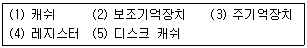
- (4)-(3)-(1)-(5)-(2)
- (4)-(5)-(3)-(1)-(2)
- (4)-(1)-(3)-(5)-(2)
- (4)-(5)-(1)-(3)-(2)
(정답률: 82%)
88. 다음 지문에서 설명하고 있는 운영체제의 종류는?
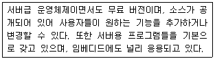
- 유닉스(Unix)
- 리눅스(Linux)
- 윈도우즈(Windows)
- 맥(Mac)
(정답률: 84%)
89. 다음의 소프트웨어에 대한 설명 중 틀린 것은?
- 명령어의 집합을 의미한다.
- 소프트웨어는 크게 시스템소프트웨어와 응용소프트웨어로 나뉜다.
- 응용소프트웨어에는 백신, 워드프로세서 등의 응용프로그램이 있다.
- 시스템소프트웨어에는 운영체제가 있다.
(정답률: 54%)
90. 다음 보기의 내용은 마이크로프로세서의 동작을 나타낸 것이다. 순서가 올바른 것은?
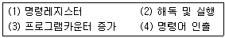
- (3)-(4)-(1)-(2)
- (4)-(1)-(2)-(3)
- (3)-(1)-(4)-(2)
- (4)-(2)-(3)-(1)
(정답률: 44%)
91. 마이크로프로세서의 시스템 버스에 해당하는 것끼리 올바르게 짝지어진 것은?
- 주소, 데이터, 메모리
- 제어, 데이터, 명령
- 데이터, 메모리, 제어
- 주소, 제어, 데이터
(정답률: 66%)
92. 메모리에 접근하지 않아 실행 사이클이 짧아지고, 연산에 사용할 데이터가 명령어에 포함되어 있는 주소지정 방식은?
- 베이스 레지스터 주소지정 방식(base register addressing mode)
- 인덱스 주소지정 방식(index addressing mode)
- 즉치 주소지정 방식(immediate addressing mode)
- 묵시적 주소지정 방식(implied addressing mode)
(정답률: 56%)
93. 전파법의 목적을 가장 잘 표현한 것은?
- 전파이용 질서 확립 및 전파이용 활성화를 통하여 국민의 복지 향상을 목적으로 한다.
- 전파기술의 개발 및 주파수 효율성을 향상하고 전파의 효율적인 운용을 목적으로 한다.
- 전파의 효율적인 이용 및 관리에 관한 사항을 정하여 전파 이용 및 전파에 관한 기술의 개발을 촉진함으로써 전파의 진흥을 도모하고 공공복지의 증진에 이바지함을 목적으로 한다.
- 전파 이용 및 무선 종사자의 권익을 보호하고 올바른 전파질서 및 진흥을 도모함으로써 공공복지 및 주파수 자원의 합리적인 이용과 전파분야 기술개발을 통한 국가 경쟁력 강화를 목적으로 한다.
(정답률: 60%)
94. 다음 중 주파수분배의 고려사항이 아닌 것은?
- 국방ㆍ치안 및 조난구조 등 국가안보ㆍ질서유지 또는 인명안전의 필요성
- 주파수의 이용현황 등 국내의 주파수 이용여건
- 전파를 이용하는 서비스에 대한 수요
- 과거의 주파수 이용 동향
(정답률: 71%)
95. 전력선 통신설비의 주파수대역과 고주파출력이 맞게 짝지어진 것은?
- 9[kHz]이상 30[MHz]까지, 10와트 이하
- 3[kHz]이상 60[MHz]까지, 50와트 이하
- 9[MHz]이상 30[MHz]까지, 10와트 이하
- 3[MHz]이상 60[MHz]까지, 50와트 이하
(정답률: 30%)
96. 중파방송을 행하는 방송국의 개설조건 중 블랭킷에어리어 내의 가구 수는 그 방송국의 방송구역 내 가구 수의 몇 퍼센트 이하라야 하는가?
- 0.15
- 0.25
- 0.35
- 0.5
(정답률: 66%)
97. 다음 중 형식등록을 하여야 하는 무선설비의 기기가 아닌 것은?
- 간이무선국용 무선설비의 기기
- 이동가입무선전화장치
- 주파수공용무선전화장치
- 네비텍스수신기
(정답률: 75%)
98. 형식검정 대상기기가 아닌 것은?
- 비상위치지시용 무선표지설비
- 위성비상위치지시용 무선표지설비의 기기
- 수색구조용 레이더트랜스폰더의 기기
- 가입자회선용 무선설비의 기기
(정답률: 67%)
99. 방송통신기기 지정시험기관이 그 업무를 1월 이상 휴지할 경우 휴지신고서를 전파연구소장에게 제출하여 승인을 얻어야 한다. 이 경우 최대 휴지기간으로 맞는 것은?
- 6개월
- 1년
- 2년
- 3년
(정답률: 59%)
100. 100[MHz] 초과 470[MHz] 이하의 주파수대를 사용하는 텔레비전방송국의 주파수허용편차로 맞는 것은?
- 10[Hz]
- 100[Hz]
- 500[Hz]
- 1[kHz]
(정답률: 11%)